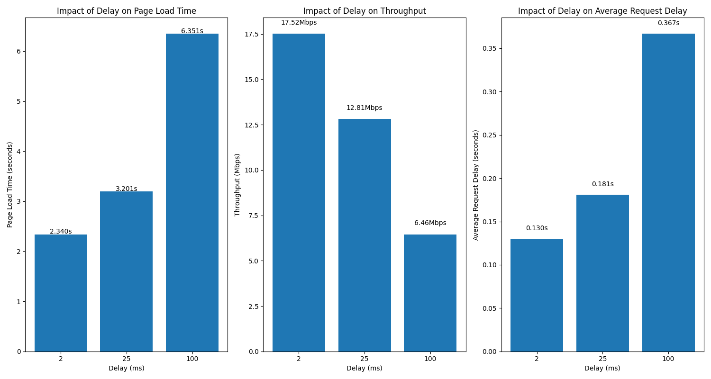
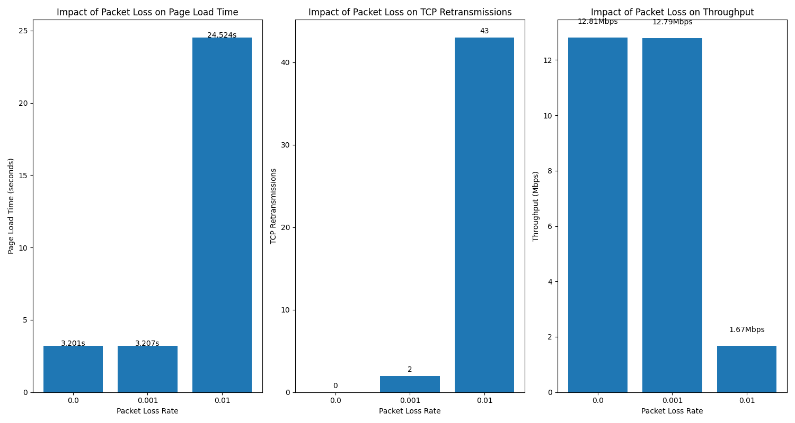
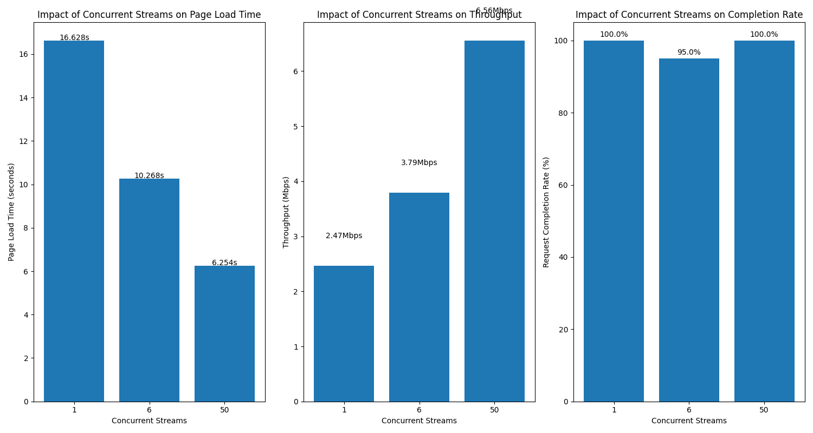

HTTP/2 Performance Test Report
Test Time: 2025-09-29 12:41:46
1. Latency Impact Test

2. Packet Loss Impact Test

3. Concurrent Streams Impact Test

4. Test Conclusions
Based on the HTTP/2 performance tests under different network conditions, we can draw the following conclusions:
- Impact of Latency: As network latency increases, page load time significantly increases and throughput decreases. This indicates that HTTP/2 performance is significantly affected by network latency.
- Impact of Packet Loss: Even a small packet loss rate leads to a dramatic increase in TCP retransmissions and HoL blocking time, severely affecting throughput and page load time. This confirms the negative impact of TCP-level head-of-line blocking on HTTP/2 performance.
- Impact of Concurrent Streams: Increasing the number of concurrent streams can improve performance to a certain extent, but excessive streams may lead to performance degradation. This suggests that HTTP/2's multiplexing mechanism can effectively enhance performance within a certain range.
5. Detailed Test Data
Latency Test Data
| Delay | Page Load Time (s) | Throughput (Mbps) | Average Request Delay (s) | HoL Blocking Time (s) |
|---|
| 2ms | 2.340236 | 17.523 | 0.13 | 0.0 |
| 25ms | 3.201152 | 12.81 | 0.181 | 0.0 |
| 100ms | 6.351152 | 6.457 | 0.367 | 0.0 |
Packet Loss Test Data
| Packet Loss Rate | Page Load Time (s) | TCP Retransmissions | HoL Blocking Time (s) | Throughput (Mbps) |
|---|
| 0.0 | 3.201152 | 0 | 0.0 | 12.81 |
| 0.001 | 3.207291 | 2 | 0.0 | 12.786 |
| 0.01 | 24.524476 | 43 | 0.0 | 1.672 |
Concurrent Streams Test Data
| Concurrent Streams | Page Load Time (s) | Throughput (Mbps) | Request Completion Rate (%) | HoL Blocking Ratio (%) |
|---|
| 1 | 16.627894 | 2.466 | 100.0 | 0.0 |
| 6 | 10.26793 | 3.794 | 95.0 | 0.0 |
| 50 | 6.254 | 6.557 | 100.0 | 0.0 |